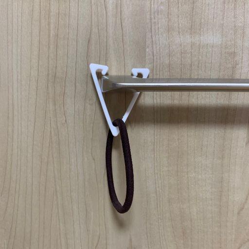

トライアングルピンセット
スケッチ、ストーリーボード

試作品
設計ファイルと実際の写真


試作品の改善点
- サイズが小さすぎた、細すぎた(ちょうど指にはまるくらいの大きさ)
- 挟む部分がせまくて何も挟めない
- 正三角形だと持ちにくい
- 角が尖っていて持った時に指が少し痛い
これらを考慮して...
完成品
設計ファイルと実際の写真

改善した点
- サイズを全体的に大きくし、厚みも増やした
- 挟む部分を広げ、挟んだものが落ちないようにクレーンゲームの要領で返しを作った
- 横の2辺を長くし、持ちやすいようにした
- 3つの角を更に丸くし、厚みの部分の角にもフィレットを少しして滑らかにした
作品の説明
三角形のピンセット。対象物に向かってピンセットを押し込むだけで掴むことができる。
最大のポイントはピンセットとしてではなくフックとして活用できる点。
クローゼットの取っ手など、モノを引っかけられるところにS字フックのようにして使うことができる。
小さいため細かいものしか掛けられないが、S字フックとは違い一度掛けたものが三角形の角にしっかり引っ掛かり落ちにくい！
この作品を作ろうと思った理由
普通のピンセットは縦長な形をしているが、挟む部分の幅を広げたらどうなるんだろうと思って作ってみた。
また、三角形にすることでS字フック的な役割も果たせるピンセットがあったら便利だなと思ったから。
前のページに戻る